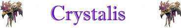

Lampo di Luce;
Conficcamento;
Riflessione Energetica;

|
|
Ambiente/Habitat | Caverne, Miniere e Sotterranei |
| Frequenza | Rara | |
| Organizzazione | Solitario | |
| Periodo di Attività | Qualsiasi | |
| Dieta | Carnivora | |
| Intelligenza | Semi-Intelligent (4) | |
| Punti Combattimento | Nessuno | |
| Tesoro | Vedi Sotto | |
| Allineamento Dominante | Neutrale | |
| Numero di Apparizione | 1 | |
| Classe Armatura | 3 [10 base, 6 corazza, 1 destrezza] | |
| Movimento | 8 esagoni | |
| Dadi Vita | 9 | |
| Thac0 | Thac0 11 | |
| Numero di Attacchi | Chela / Chela / Pungiglione | |
| Danni | 1d6+4 (taglio) / 1d6+4 (taglio) / 1d12+3 (punta) | |
| Poteri Offensivi |
Istinto Predatorio; Lampo di Luce; Conficcamento; |
|
| Poteri Difensivi |
Schegge Acuminate; Riflessione Energetica; |
|
| Poteri Generici | Nessuno; | |
| Vulnerabilità | Nessuna; | |
| Resistenza alla Magia | Nessuna; | |
| Sensi | Vista Comune, Infravisione 18 metri, Sensi Superiori | |
| Dimensioni | Large (3 m. di lunghezza) | |
| Morale | Elite (14) | |
| Valore in Punti Esperienza | 3570 |
|
TIRI SALVEZZA DELLA CREATURA |
|||||||
| CORAGGIO | ENERGIA VITALE | MAGIA* | MALATTIA | MENTE | RIFLESSI | ROBUSTEZZA | VELENO |
| 0 | 0 | +10% | 0 | 0 | 0 | 0 | 0 |
| 39 | 44 | 44 | 37 | 52 | 46 | 41 | 34 |
Descrizione
X.
Combat
X.
ISTINTO
PREDATORIO
(Moderate Special Ability):
La creatura
possiede un forte istinto predatorio, per tale motivo costei riceve un
bonus costante di
+1
ai suoi tiri per colpire.
LAMPO DI LUCE
(Superior Special Ability):
La creatura è in
grado di emettere un potentissimo bagliore di luce. Si tratta di un'azione
complessa avente fattore iniziativa pari a +2. Tutte le creature che si trovano
in una sfera di 33 metri
centrata sulla creatura,
ad eccezione della stesso, devono superare immediatamente un
tiro salvezza su riflessi
per distogliere lo sguardo in tempo dal lampo di luce (si tratta di un tiro
salvezza puro non modificato dalla differenza dei livelli con la creatura). Se
il tiro salvezza fallisce le creature saranno
accecate (blinded) per 1d4 round.
Creature che sono caratterizzate da sensibilità alla luce saranno accecate per 2
round supplementari. Creature non dotate di comuni organi visivi, invece, non
subiranno questo effetto magico.
Una volta utilizzato, la creatura
non potrà riutilizzare questo
potere speciale nei nove round di combattimento immediatamente successivi.
CONFICCAMENTO [PUNGIGLIONE] (Superior Special Ability): Qualora la creatura colpisce particolarmente a fondo con l'attacco indicato un avversario di taglia ricompreso tra Small e Large costei impalerà letteralmente il corpo della vittima. In pratica, ciò avviene quando questa creatura colpisce una vittima con l'attacco indicato effettuando un tiro per colpire naturale da 18 a 20. Quando ciò si verifica la creatura riceverà un bonus di 1d6 al dado base delle ferite prodotto dall'attacco (si tratta quindi di un bonus che è applicato al dado di danno entro il limite del risultato massimo del dado stesso). La vittima impalata si considererà, inoltre incapacitata e non potrà spostarsi dalla posizione occupata fino a che resterà in tale stato. All'inizio del round successivo (si consideri una non azione effettuata prima della fase delle intenzioni ma dopo la fase di attesa) la vittima dovrà superare un tiro salvezza su riflessi (ai quali si applicheranno anche i modificatori dovuti alla differenza di livello tra la vittima e la creatura). Se il tiro riesce la creatura sarà liberata, altrimenti subirà 1d6 danni ulteriori da punta e si considererà ancora impalata per tutto il round in corso potendo provare a liberarsi solo all'inizio del round successivo. Fino a che la vittima resta impalata, dunque, questa creatura potrà attaccare unicamente costei con gli eventuali altri attacchi fisici di cui dispone. Alla fine di ogni round la creatura può sempre decidere di liberare la vittima impalata.
SCHEGGE ACUMINATE (Superior Special Ability): La corazza della creatura si frantuma in schegge acuminate quando viene colpita da colpi violenti con le armi o con gli attacchi fisici. Per tale motivo ogni volta che la creatura è colpita in corpo a corpo da un attacco fisico, chi ha effettuato il colpo avrà una possibilità pari al 5% per danno effettivamente inflitto alla creatura di essere colpito da una folata di schegge acuminate subendo 1d6 danni da punta comuni.
RIFLESSIONE ENERGETICA (Powerful Special Ability): Il corpo della creatura la difende automaticamente dagli attacchi di energia a distanza che sono rivolti contro la stessa indipendentemente dalla loro fonte (si pensi a poteri speciali, effetti di oggetti magici, abilità naturali od incantesimi). La protezione funziona solo su attacchi di tipo energetico (si pensi agli attacchi elementali) che non siano conseguenze di attacchi in corpo a corpo. La protezione, quindi, non si applicherà contro gli attacchi di tipo fisico né contro i danni energetici che sono la conseguenza diretta di attacchi di tipo fisico. La protezione si applicherà, dunque, ai soli attacchi a distanza di tipo unicamente energetico che siano puntati direttamente contro la creatura. La protezione, infatti, non si attiverà nei confronti di attacchi od effetti generici ad area. Quando la creatura è vittima di un attacco energetico a distanza puntato contro la stessa, costei riceverà unicamente il 50% dei danni normalmente previsti dall'attacco (riduzione effettuata prima di ogni altra riduzione o tiro salvezza), inoltre, chi ha effettuato l'attacco vedrà reindirizzarsi verso sé stesso parte dell'energia utilizzata sempre che il raggio dell'attacco permetta di effettuare il percorso avanti ed indietro. Se ciò si verifica, la fonte dell'attacco energetico (o chi ha lanciato la relativa magia) subirà il 50% dei danni dell'attacco avendo diritto alle comuni riduzioni e tiri salvezza applicabili contro lo stesso.
Habitat/Society
X.
Ecology
Gli occhi di questa creatura rappresentano due minerali che possono essere equiparati a due gemme dal valore di mercato di 300 monete d'oro l'uno e dal peso di 0,1 libbra. Per poterli estrarre occorre necessariamente uccidere la creatura. Si noti che essendo particolarmente resistenti la loro estrazione sarà possibile senza particolari difficoltà e senza richiedere l'utilizzo di competenze specifiche.
Mystical Resource Sourge
(Cuore di Cristallo) Quantità: 1, Presenza 50% - Effetto Particolare:
Luce
- Qualità della Risorsa:
Common.
Mystical Resource Sourge
(Pungiglione) Quantità: 1, Presenza 33% - Scuola di Magia:
Enchantment
- Qualità della Risorsa:
Common.